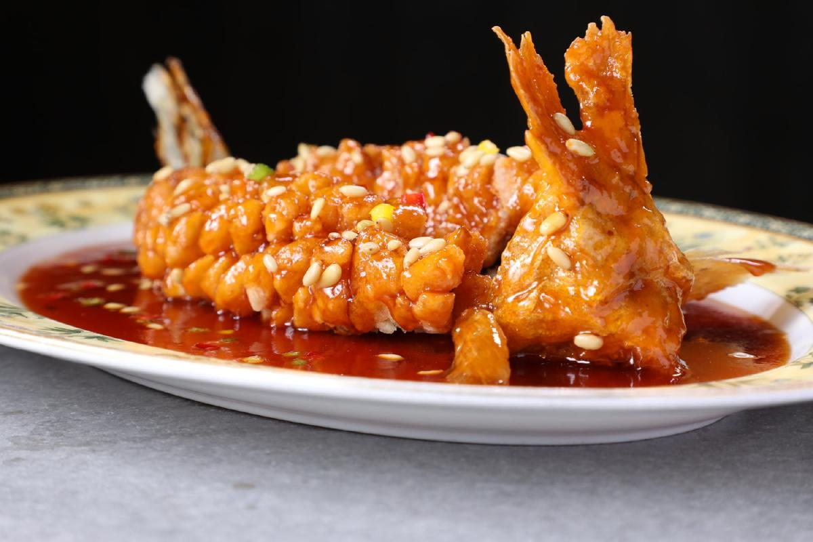
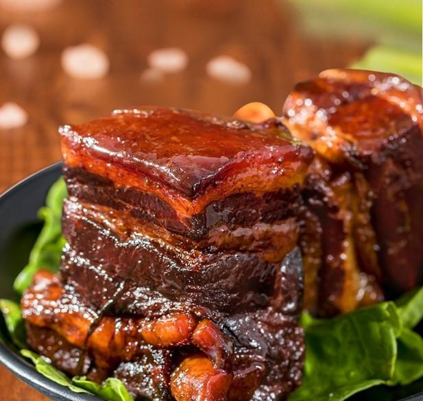
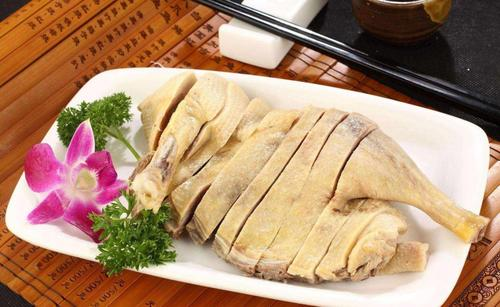
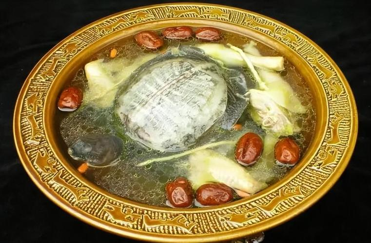
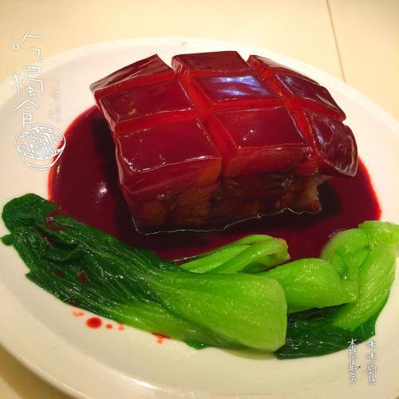

苏菜介绍
苏菜，又称江苏菜，是中国传统的四大菜系之一，以其清鲜、平和、雅致著称。
清鲜平和
苏菜讲究鲜甜味美，擅长以糖为调料，并注意调料的平衡，使菜肴味道和谐。
悠久历史
苏菜历史悠久，可以追溯到春秋战国时期，发展至今形成了独特的烹饪技艺和风味。
代表菜
苏菜的代表菜包括松鼠桂鱼、东坡肉、盐水鸭等，每道菜都以其独特的风味和精湛的烹饪技巧闻名。
苏菜的历史渊源
苏菜起源于中国东部的江苏省，在漫长的历史发展过程中，苏菜融合了江南水乡的秀丽风光和丰富的物产，形成了独特的风味。
苏菜注重刀工与火候，菜肴多以炖、焖、煨、蒸等技法为主，讲究色、香、味、形的和谐美。
美食画廊




